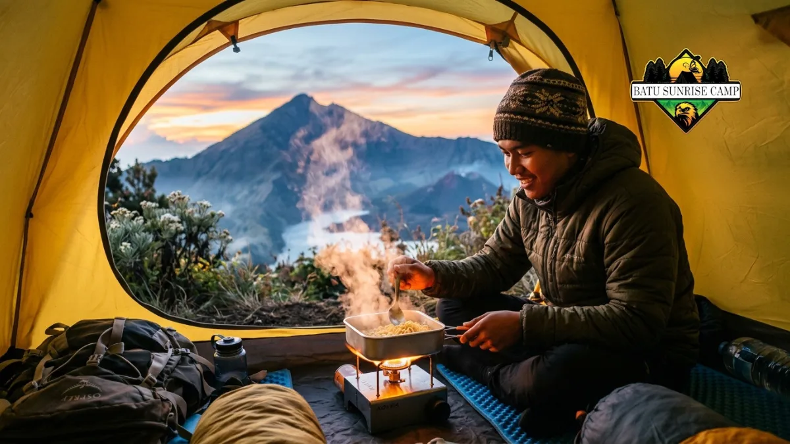

Makanan untuk camping di gunung idealnya ringan, tahan lama, tinggi kalori, dan mudah diolah dengan peralatan masak sederhana di ketinggian.
Pemilihan yang tepat menentukan stamina, keamanan, dan kenyamanan selama pendakian berlangsung.
Apa Saja Jenis Makanan yang Cocok untuk Camping di Gunung
Makanan yang cocok untuk camping di gunung umumnya terbagi menjadi makanan utama, camilan cepat saji, dan bekal darurat yang semuanya dipilih berdasarkan bobot ringan dan kandungan energi tinggi.
Kategori makanan yang biasa dibawa pendaki antara lain:
- Makanan instan berbasis karbohidrat, seperti mi instan, bihun instan, dan nasi instan yang hanya perlu diseduh air panas.
- Sumber protein praktis, seperti abon, dendeng, sarden kaleng kecil, atau kacang-kacangan.
- Camilan energi tinggi, seperti cokelat batangan, energy bar, kurma, dan biskuit.
- Sayur dan buah kering, sebagai sumber serat dan vitamin tambahan yang ringan dibawa.
- Bumbu dan penyedap ringkas, seperti bumbu instan sachet untuk menambah cita rasa masakan di gunung.
Kombinasi kategori ini membantu menjaga keseimbangan energi dan nutrisi selama pendakian berlangsung, terutama pada rute yang membutuhkan waktu lebih dari satu hari.
Berapa Kalori yang Dibutuhkan Saat Mendaki Gunung
Kebutuhan kalori pendaki umumnya lebih tinggi dibandingkan aktivitas harian biasa karena medan gunung menuntut usaha fisik yang berat dan berkelanjutan.
Secara umum, aktivitas pendakian dengan beban carrier dapat meningkatkan kebutuhan energi harian secara signifikan dibandingkan kondisi normal, sehingga banyak pendaki disarankan membawa makanan dengan densitas kalori tinggi per gram beratnya.
Menurut beberapa panduan aktivitas luar ruang, kebutuhan energi tambahan ini dapat mencapai ribuan kalori ekstra per hari tergantung intensitas medan dan durasi perjalanan (sumber: panduan nutrisi aktivitas luar ruang, 2023-2025).
Karena itu, pendaki sebaiknya tidak hanya membawa makanan dalam jumlah cukup, tetapi juga memastikan jenis makanan yang dibawa memiliki rasio kalori terhadap berat yang efisien.
Bagaimana Cara Memilih Makanan Berdasarkan Berat dan Daya Tahan
Makanan untuk camping di gunung sebaiknya dipilih dengan mempertimbangkan bobot per porsi, daya tahan terhadap suhu dingin, dan kemudahan pengolahan di lokasi terbatas.
Beberapa pertimbangan praktis yang dapat digunakan:
- Pilih makanan kering atau dehidrasi karena lebih ringan dibandingkan makanan basah.
- Hindari makanan yang mudah basi tanpa pendingin, seperti produk olahan susu segar.
- Utamakan kemasan yang tahan tekanan dan tidak mudah bocor selama perjalanan.
- Sesuaikan porsi dengan jumlah hari pendakian ditambah cadangan minimal satu porsi ekstra.
- Pertimbangkan waktu masak; makanan yang butuh waktu masak lebih singkat lebih hemat gas dan waktu istirahat.
Pendekatan ini membantu pendaki menyeimbangkan antara kenyamanan membawa beban dan kecukupan energi selama perjalanan.
Bagaimana Cara Menyimpan Makanan Agar Tahan Lama di Gunung
Penyimpanan makanan yang tepat di gunung melibatkan perlindungan dari kelembapan, suhu dingin ekstrem, dan potensi gangguan satwa liar di area camping.
Beberapa praktik penyimpanan yang umum diterapkan:
- Gunakan kantong kedap udara atau dry bag untuk mencegah makanan lembap.
- Simpan makanan matang secara terpisah dari makanan mentah untuk menghindari kontaminasi.
- Gantung bekal makanan di tempat aman jika berada di area dengan potensi satwa liar.
- Hindari menyimpan sisa makanan berbau kuat di dalam tenda.
- Bawa wadah tahan banting untuk melindungi makanan dari benturan selama perjalanan.
Penyimpanan yang baik tidak hanya menjaga kualitas makanan tetapi juga mengurangi risiko keracunan makanan selama pendakian berlangsung.

Suasana pendaki memasak menggunakan nesting di tenda saat camping gunung.
Baca juga: Cara Memasak Makanan saat Camping di Gunung dengan Peralatan Sederhana
Apa Kesalahan Umum dalam Menyiapkan Logistik Makanan Pendakian
Kesalahan logistik makanan pendakian yang paling sering terjadi adalah membawa terlalu sedikit cadangan energi dan mengabaikan kemudahan proses memasak di lapangan.
Beberapa kesalahan umum lainnya:
- Terlalu fokus pada variasi rasa tanpa memperhitungkan total berat bawaan.
- Tidak membawa cadangan makanan darurat untuk situasi tak terduga seperti keterlambatan turun gunung.
- Mengabaikan kebutuhan air minum yang cukup untuk mengolah makanan instan.
- Membawa makanan yang belum pernah dicoba sebelumnya sehingga berisiko tidak cocok dengan pencernaan.
- Tidak memperhitungkan waktu dan bahan bakar yang dibutuhkan untuk memasak semua bekal yang dibawa.
Menghindari kesalahan ini membantu memastikan perjalanan tetap aman dan nyaman meskipun terjadi perubahan rencana di tengah pendakian.
Baca juga: Kesalahan Menyiapkan Bekal Makanan Naik Gunung yang Perlu Dihindari
Tips Praktis Menyusun Menu Makanan Camping di Gunung
Menyusun menu makanan camping di gunung sebaiknya dilakukan dengan merencanakan porsi per hari, memisahkan makanan utama dan camilan, serta menyesuaikan menu dengan durasi pendakian.
Langkah praktis yang dapat diikuti:
- Buat daftar menu harian sesuai jumlah hari pendakian.
- Kelompokkan makanan berdasarkan waktu makan: sarapan, makan siang, makan malam, dan camilan.
- Hitung total berat bekal dan sesuaikan dengan kapasitas carrier.
- Sisihkan porsi darurat yang tidak dihitung dalam menu harian biasa.
- Uji coba memasak menu di rumah sebelum pendakian untuk memastikan rasa dan waktu masak sesuai harapan.
Perencanaan menu yang matang membantu pendaki tetap fokus menikmati perjalanan tanpa khawatir kekurangan energi di tengah jalur.
Perbandingan Makanan Instan vs Makanan Olahan Sendiri untuk Gunung
Makanan instan menawarkan kepraktisan dan waktu masak singkat, sementara makanan olahan sendiri umumnya lebih fleksibel dari segi rasa namun membutuhkan persiapan tambahan sebelum perjalanan.
Makanan instan cenderung lebih ringan dalam kemasan asli dan tahan lama tanpa pendingin, sehingga cocok untuk pendakian jangka pendek hingga menengah.
Di sisi lain, makanan olahan sendiri seperti nasi kepal atau lauk kering buatan rumah dapat memberikan variasi rasa yang lebih personal, tetapi memerlukan pengemasan khusus agar tetap aman dikonsumsi selama perjalanan.
Kombinasi keduanya sering menjadi pilihan yang seimbang, di mana makanan instan digunakan sebagai menu utama dan makanan olahan sendiri sebagai pelengkap atau camilan tambahan.
Kesimpulan
Makanan untuk camping di gunung sebaiknya dipilih berdasarkan bobot ringan, kandungan kalori tinggi, dan kemudahan pengolahan.
Rencanakan menu harian, siapkan cadangan darurat, dan perhatikan cara penyimpanan agar bekal tetap aman dikonsumsi selama pendakian.
Uji coba menu sebelum keberangkatan juga membantu menghindari kejutan yang tidak diinginkan di lapangan.